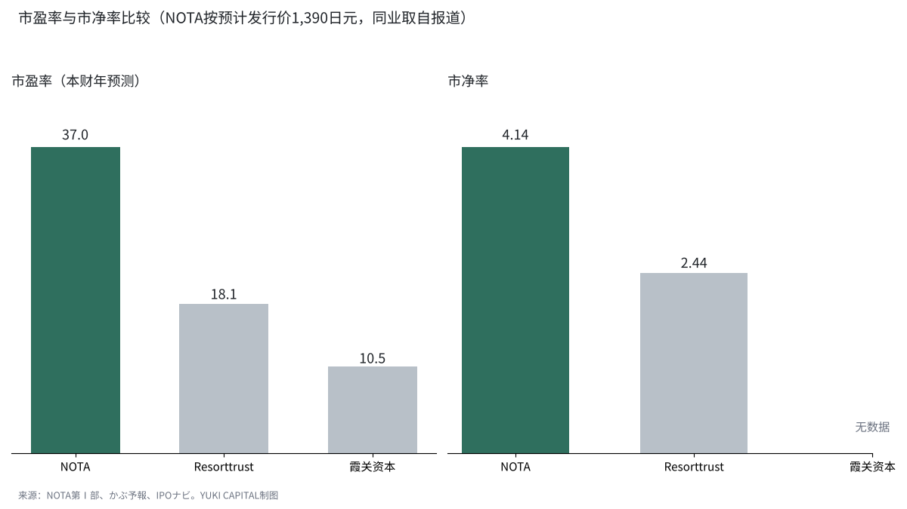
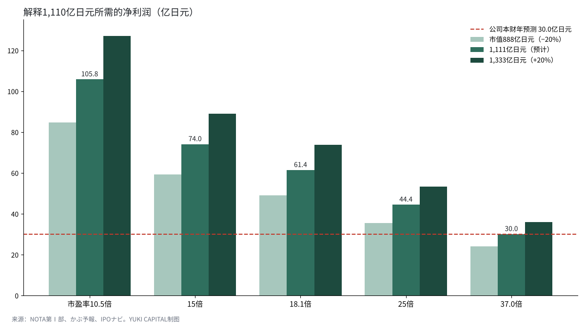

NOTA（原NOT A HOTEL）预计市值1,110亿日元，究竟包含了怎样的预期？
出售别墅共同所有权的NOTA株式会社（2026年10月由原NOT A HOTEL更名）于2026年11月6日获得东京证券交易所的上市批准，计划于12月9日在Growth市场上市[1][2]。
按预计发行价1,390日元计算，市值约为1,110亿日元（约合7.04亿美元，约合47.3亿元人民币），约为上一财年净利润4.57亿日元的243倍[1]。
本文要回答的问题是：这1,110亿日元以多少利润和增长为前提？我从披露资料和同业倍数倒推，再改变前提加以检验。
- 约1,110亿日元的预计市值，是公司预测的本财年净利润30.0亿日元的37.0倍，约为同业度假会员企业Resorttrust（约18倍）的2倍。
- 若以同业水平的18倍来解释，净利润需约61亿日元；以15倍计，需约74亿日元。也就是说，这一价格以本财年预测2.0至2.5倍的利润为前提。
- 支撑因素是79.1%的入住率（日本度假酒店平均为56.9%）和约370亿日元已签约但尚未确认的收入；弱点是经营活动现金流为负，以及发售股份中约7成来自现有股东出售。

问题与背景
NOTA成立于2020年4月1日。创始人濵渦伸次1983年生于宫崎，2007年与高专同学创办电商建站公司Aratana，2015年通过换股将其出售给Start Today（现ZOZO）[3][4]。他于2020年3月离开ZOZO，次月创立NOT A HOTEL，首批据点为栃木县那须和宫崎县青岛[5]。
核心业务是把建筑师和设计师设计的别墅，以每年10晚至360晚为单位，作为共同所有权出售[1]。业主不使用的日子作为酒店出租，业主每年支付约为购买价格3%的管理费[1]。款项在签约时收取30%、主体结构完成时40%、竣工时30%，收入在开业或交付时确认[1]。上一财年收入中，相当于出售会员权的会员业务为115.4亿日元，运营业务为19.9亿日元[1]。截至2026年9月，已开业10个据点、48处物业，累计业主1,357名[1]。
先定义几个用语。预计市值，是预计发行价乘以上市时已发行股数。市盈率（PER）是市值除以净利润，市销率（PSR）是市值除以收入，市净率（PBR）是市值除以净资产，都表示价格相当于几年的利润或资产。入住率是可售客房中实际被使用的比例。
类似业务在日本国内外都有。美国的Pacaso以1/8至1/2的份额出售住宅，2021年以15亿美元估值融资[6]。日本最大的会员制度假企业Resorttrust在东证Prime市场上市，截至2026年3月的财年收入2,630亿日元，营业利润292亿日元[7]。美国分时度假最大企业Marriott Vacations Worldwide，2025年度收入50.3亿美元，净亏损3.08亿美元[8]。美国高端度假俱乐部Inspirato于2025年12月同意以每股4.27美元私有化，可见这一业态在上市市场并非一直获得高估值[15]。
数据与方法
数据的起点是为申请上市提交的有价证券报告书（第Ⅰ部）和获批时的披露[1][2]。预计发行价1,390日元，上市时已发行股数79,898,000股，相乘得出预计市值1,110.58亿日元[2]。上一财年（截至2026年3月）收入128.78亿日元，净利润4.57亿日元，净资产150.48亿日元。公司预测本财年（截至2027年3月）收入325.8亿日元、净利润30.0亿日元[2]。
比较对象选了两家：会员制度假企业Resorttrust，以及从事不动产开发与运营的霞关资本（Kasumigaseki Capital）。据报道，两者的预测市盈率分别约为18.1倍和10.5倍，Resorttrust的市净率约为2.44倍[9][10]。入住率的比较使用日本观光厅住宿旅行统计调查的2025年速报值[11]。
方法分两步。第一步，把预计市值拆解为三个倍数。第二步，套用同业倍数，以“市值÷倍数”倒推解释1,110亿日元所需的净利润。在此基础上，检验发行价在暂定区间内上下变动20%时、以及套用三种倍数时的敏感度。
结果
| 指标 | NOTA | Resorttrust | 霞关资本 |
|---|---|---|---|
| 市盈率（本财年预测） | 37.0倍 | 约18.1倍 | 约10.5倍 |
| 市盈率（上一财年实际） | 243.0倍 | — | — |
| 市销率（上一财年） | 8.62倍 | 约1.4倍 | — |
| 市净率（2026年9月末净资产） | 4.14倍 | 约2.44倍 | — |

按本财年预测净利润计算的市盈率为37.0倍，约为Resorttrust的2倍。按上一财年实际利润计算则跃升至243.0倍，说明公司是在利润仍小的阶段上市。按收入计算的市销率为8.62倍，与以出售会员权为主的同业相比差距很大。
另一方面，入住率很强。NOTA的79.1%比日本观光厅统计中2025年度假酒店平均的56.9%高出22.2个百分点，也高于城市酒店的74.2%[1][11]。换算成一年，约有289天客满。已签约但尚未确认为收入的金额约有370.2亿日元，为本财年收入预测的规模提供了依据[1]。
敏感度分析
| 套用的倍数 | 解释1,110亿日元所需净利润 | 相当于本财年预测（30.0亿日元）的倍数 |
|---|---|---|
| 市盈率37.0倍（现状） | 30.0亿日元 | 1.00倍 |
| 市盈率25倍 | 44.4亿日元 | 1.48倍 |
| 市盈率18.1倍（Resorttrust） | 61.4亿日元 | 2.05倍 |
| 市盈率15倍（同业平均） | 74.0亿日元 | 2.47倍 |
| 市盈率10.5倍（霞关资本） | 105.8亿日元 | 3.53倍 |

若以同业水平的18.1倍解释1,110亿日元，净利润需约61.4亿日元，约为本财年预测的2倍。按某IPO评论网站给出的同业平均15倍，需约74.0亿日元；按不动产开发企业霞关资本的10.5倍，则需约105.8亿日元[12]。
若发行价在暂定区间内上下变动20%，市值将在约888亿日元至约1,333亿日元之间变动，以18.1倍解释所需的净利润分别约为49.1亿日元和73.6亿日元。无论哪种组合，前提都是高于本财年预测30.0亿日元的利润。
股东与发售
按含潜在股份的持股比例，创始人濵渦伸次以27.45%为第一大股东，其后为Open House集团8.55%、红杉6.18%、ANRI 5.57%、丰田发明伙伴（Toyota Invention Partners）4.47%、SBI控股3.57%[13]。上市前，公司截至C轮累计融资332亿日元，2026年8月D轮融资165亿日元[13]。
本次发行包括公开募集5,080,800股、出售12,216,600股，以及最多2,594,600股的超额配售[2]。不计超额配售，约70.6%的股份来自现有股东出售。公司最多可获得约99亿日元资金，用途为人工费和营销，不用于物业开发[12]。部分上市前投资的风投机构，设有股价超过发行价1.5倍即解除锁定（限售）的条件[12]。这也意味着上市后不久存在容易出现抛售的价位。
讨论
也有相反的看法：用同业倍数衡量NOTA，忽视了它的增长速度。收入预计从上一财年的128.78亿日元增至本财年的325.8亿日元，约增长2.5倍，利润也预计从4.57亿日元增至30.0亿日元[2]。若这种增长持续两三年，37倍也可能并不算高。
不过，局限也很大。由于收入在开业或交付时集中确认，年度利润会随交付时间大幅波动[14]。经营活动现金流上一财年为负25.71亿日元，本财年上半年为负61.25亿日元，有息负债两年间几乎翻倍至179.63亿日元[14]。审计师也把会员权收入的期间归属列为关键审计事项[14]。本文的同业倍数取自报道，未统一到同一日期。上市前的10月，也有个人投资者在分析中写道，找不到断言其并不贵的依据[16]。
检验标准有三条。第一，11月20日的暂定价格区间和11月30日的发行价，相对1,390日元往哪个方向变动。第二，本财年净利润能否达到30.0亿日元。第三，约370亿日元的未确认收入能否按计划转为收入，经营活动现金流能否转正。
结论
约1,110亿日元的预计市值，是本财年预测净利润的37.0倍；若用同业倍数来解释，需要本财年预测2.0至2.5倍的利润。高入住率和约370亿日元的未确认收入，部分支撑了这种增长预期。另一方面，现金流为负以及以现有股东出售为主的发行结构，仍是压低价格的因素。
我的看法
从日本看，我认为这1,110亿日元太高了。在我看来，NOTA是一家酒店和不动产公司，却被给予了同业2倍的倍数。尽管如此，我能理解这个价格反映的是瞄准日本顶级富裕阶层的战略和设计的力量。股东构成也引起了我的注意：创始人持有近3成，Open House持有不到9%。我已决定把资金放在自己选定的AI公司上，所以不会在上市时买入，只会在12月9日看看它的价格。
参考文献
- 日本交易所集团, 「NOTA株式会社 新規上場申請のための有価証券報告書（Ⅰの部）」, 2026-11-06, https://www.jpx.co.jp/listing/stocks/new/t13vrt000002kfqd-att/12NOTA-1s.pdf
- BRIDGE, 「NOTA（旧NOT A HOTEL）、東証グロース上場が承認」, 2026-11-06, https://thebridge.jp/2026/11/nota-tse-growth-ipo-approved
- Start Today, 「株式会社アラタナの株式取得（完全子会社化）に関するお知らせ」, 2015-03-25, https://corp.zozo.com/assets_wp/cf/wp-content/uploads/2017/03/Release_ST_Aratana201503251.pdf
- 现代商业（現代ビジネス）, 「アラタナ 濵渦伸次」, 2015, https://gendai.media/articles/-/42920
- BRIDGE, 「NOT A HOTEL、2か月で約40億円を販売」, 2021-11-30, https://thebridge.jp/2021/11/not-a-hotel-sold-4b-yen-in-2-month
- Pacaso, "Pacaso Raises $35M to Expand Luxury Home Co-Ownership", 2025-07-31, https://press.pacaso.com/2025-07-31-Pacaso-Raises-35M-to-Expand-Luxury-Home-Co-Ownership
- Resorttrust, 「2026年3月期 決算短信」, 2026-05-15, https://www2.jpx.co.jp/disc/46810/081220260513530758_tse-acedjpsm-46810-20260515346810-ixbrl.htm
- Marriott Vacations Worldwide, "Fourth Quarter and Full Year 2025 Results", 2026-02, https://ir.marriottvacationsworldwide.com/node/20756
- かぶ予報, 「リゾートトラスト（4681）」, 2026-11-08访问, https://kabuyoho.jp/reportTarget?bcode=4681
- かぶ予報, 「霞ヶ関キャピタル（3498）」, 2026-11-08访问, https://kabuyoho.jp/reportTarget?bcode=3498
- 日本观光厅, 「宿泊旅行統計調査 2025年（速報値）」（Travel Voice摘要）, 2026-03-02, https://www.travelvoice.jp/20260302-159329
- IPOナビ, 「NOTA（673A）IPO上場の評価」, 2026-11-06, https://ipo-navi.jp/column/nota-not-a-hotel-673a-ipo-listing-report
- BRIDGE, 「NOT A HOTEL、シリーズDで165億円を調達」, 2026-08-06, https://thebridge.jp/2026/08/not-a-hotel-raises-series-d-funding
- note（toworu_note001）, 「NOTAの上場資料を読む」, 2026-11, https://note.com/toworu_note001/n/n285d2e10b827
- BusinessWire, "The Exclusive Collective Launches with Agreement to Acquire Inspirato", 2025-12-16, https://www.businesswire.com/news/home/20251216433405/en/The-Exclusive-Collective-Launches-with-Agreement-to-Acquire-Inspirato-Uniting-Three-Market-Leading-Luxury-Travel-Brands
- note（k19sawada）, 「NOT A HOTELの上場を考える」, 2026-10-14, https://note.com/k19sawada/n/nbc444e3af136
图表由YUKI CAPITAL制作。题图：Salman Saqib（Unsplash）
每天的数字和判断，我都记录在X上。